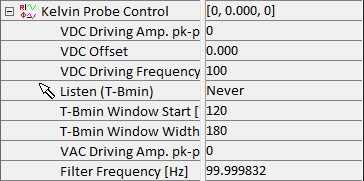

|
开尔文探针控制
|
开尔文探针控制参数组包含 开尔文探针力显微镜（KPFM）的高级参数。以下值在开始测量时使用默认值初始化，但可以在测量过程中调整：
更多信息（操作指南）：

VDC 驱动振幅 pk-pk [V]
VDC 的调制振幅，单位为 V，定义最小值搜索的电压范围。
VDC 偏移
VDC 的偏移，单位为 V，偏移最小值搜索的电压范围。
VDC 驱动频率 [Hz]
VDC 的调制频率，单位为 Hz，定义搜索速度。每像素时间应根据此值调整，例如对于 100 Hz 为 10 ms/像素。
监听 (T-Bmin)
允许通过鼠标定义 T-Bmin 搜索窗口。T-Bmin 搜索窗口定义沿 X 轴的最小 T-B 信号的搜索范围。
T-Bmin 窗口起始 [°]
定义 T-Bmin 搜索窗口的起始点。
T-Bmin 窗口宽度 [°]
定义 T-Bmin 搜索窗口的宽度。
VAC 驱动振幅 pk-pk [V]
VAC 的调制振幅，单位为 V。VAC 驱动振幅、VDC 驱动振幅与 VDC 偏移绝对值之和必须小于或等于 20 V。
滤波器频率 [Hz]
此参数定义最小值搜索的 T-B 振幅平均量。较小的值产生更平滑的曲线，但也会导致最小值实际位置与测量位置之间的更大偏移。